INSCIENCE Conference
Найбільша науково-популярна та deep tech конференція в Україні. Пʼята конференція відбулася 13–14 червня 2026 року в Києві.
- 1 500+
- учасників
- 50+
- спікерів
- 15+
- країн
- 60+
- стартапів і розробок
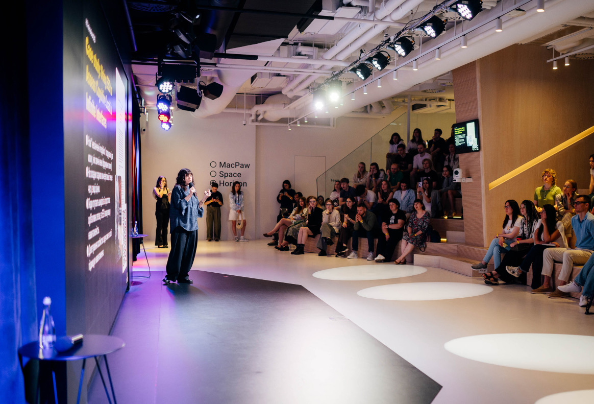
Робимо
науку
видимою.
Громадська організація, яка з 2018 року популяризує науку і доказову медицину та робить українських вчених і лікарів видимими.
INSCIENCE популяризує науку і доказову медицину та підвищує їхню цінність для суспільства, бізнесу та держави. Ми робимо українських вчених та лікарів/ок видимими і розвиваємо критичне мислення через науковий підхід до пізнання світу.
Про INSCIENCEНайбільша науково-популярна та deep tech конференція в Україні. Пʼята конференція відбулася 13–14 червня 2026 року в Києві.

До $10 000 на дослідження для команд під керівництвом жінок.
Детальніше про Women Led ScienceПлатформа доказової інформації про здоровʼя: гайди разом із МОЗ і два подкасти.
Детальніше про Медіа «Бережи себе»STEAM-події для дітей у Харкові, Миколаєві, Запоріжжі, Херсоні та Одесі, а також для дітей ветеранів у Києві.
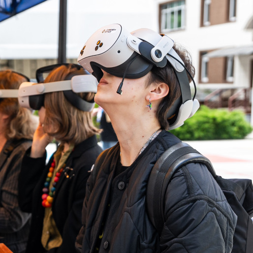
Безоплатні зустрічі з лікарями про профілактику серцево-судинних захворювань.
Детальніше про Осередки здоровʼяБезплатний курс із 12 вебінарів для освітян; з 2025 року — навчання вчителів у 10 громадах.
Детальніше про STEM-освіта для дітейДопомагає науковцям і бізнесу разом створювати наукоємні технології.
Детальніше про INSCIENCE Business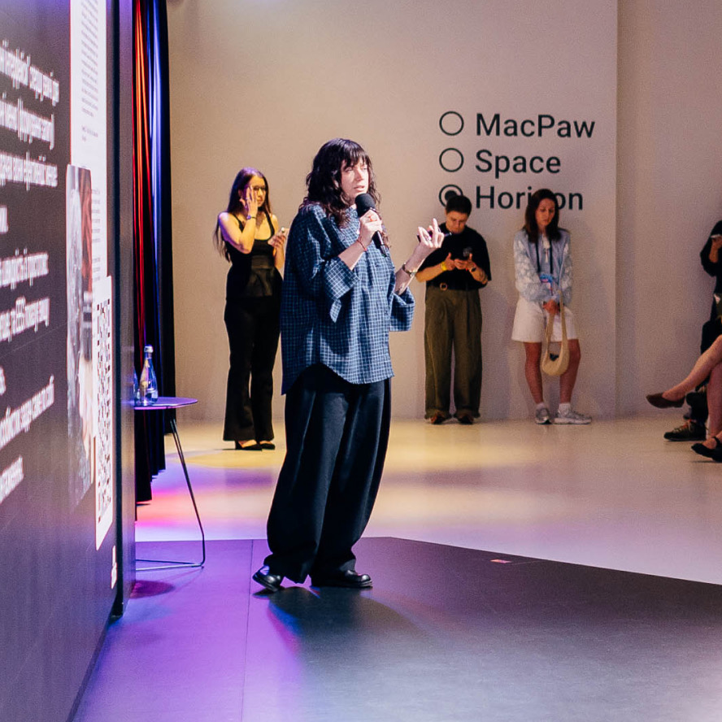
Профорієнтаційні зустрічі підлітків із науковцями та науковицями, за підтримки МОН.
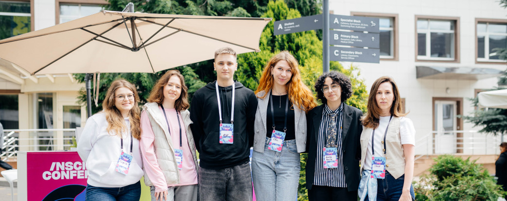
Засновниці організації продовжать працювати з командою в новій ролі — стратегічно, з фокусом на розвиток і партнерства.
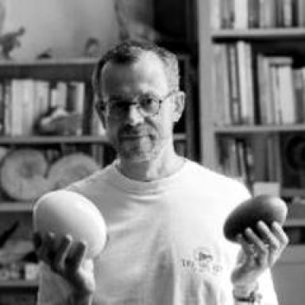
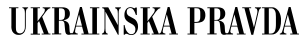
Пʼята INSCIENCE Conference: 1 500+ учасників і 60+ стартапів у Києві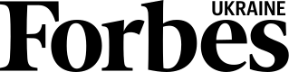
INSCIENCE Business: як науковці й бізнес разом створюють наукоємні технології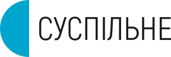
Science Kids: STEAM-події для дітей у Харкові, Миколаєві, Запоріжжі, Херсоні та Одесі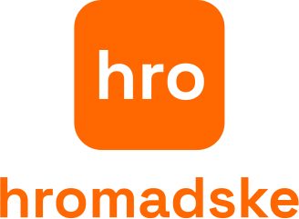
Осередки здоровʼя: безоплатні зустрічі з лікарями у прифронтових містах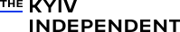
Як INSCIENCE робить українських вчених і лікарів видимими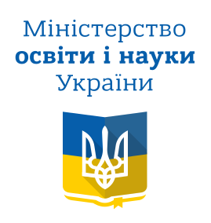
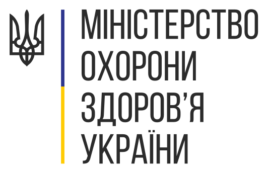

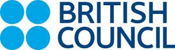
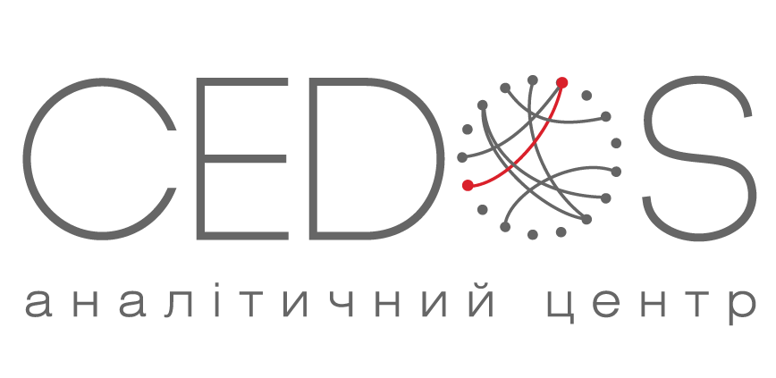
Ваш внесок стає науковими подіями для дітей, грантами для науковиць і доказовою інформацією про здоровʼя.
Підтримати онлайн